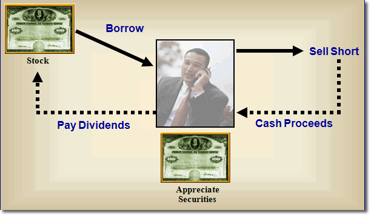

The third, and more complex monetization strategy, is termed a "short-against-the-box" transaction. While once very popular, tax legislation passed in 1997 has reduced its use. However, it remains important to understand because under some circumstances the strategy is still viable. We will first discuss the basics of the strategy as it has historically been used, followed by a review of the constructive sale rules levied in 1997 that dramatically impact this strategy today.
A short sale is one in which the investor sells a stock and borrows the stock from a counterparty for delivery to the purchaser. The investor is then said to be "short" the stock, must pay interest on the borrowed stock, and will eventually have to "cover" or "close" the short position by purchasing the stock and delivering it back to the party from whom it was borrowed.
If the investor already owns the stock before going short, and can cover the short position at any time by simply delivering the shares already owned, this strategy is called "short-against-the-box." It is diagramed below:

Using this strategy, the shareholder essentially receives the benefit of selling the stock without generating the tax liability. He/she has effectively:
-
Received the current market value of the shares.
-
Protected against any price decline and forfeited any participation in a price increase.
-
Forfeited any participation in income because the dividends must be delivered to the party from whom the shares were borrowed.
But there is one major problem with the short-against-the box strategy, and that is the Constructive Sale Rules.